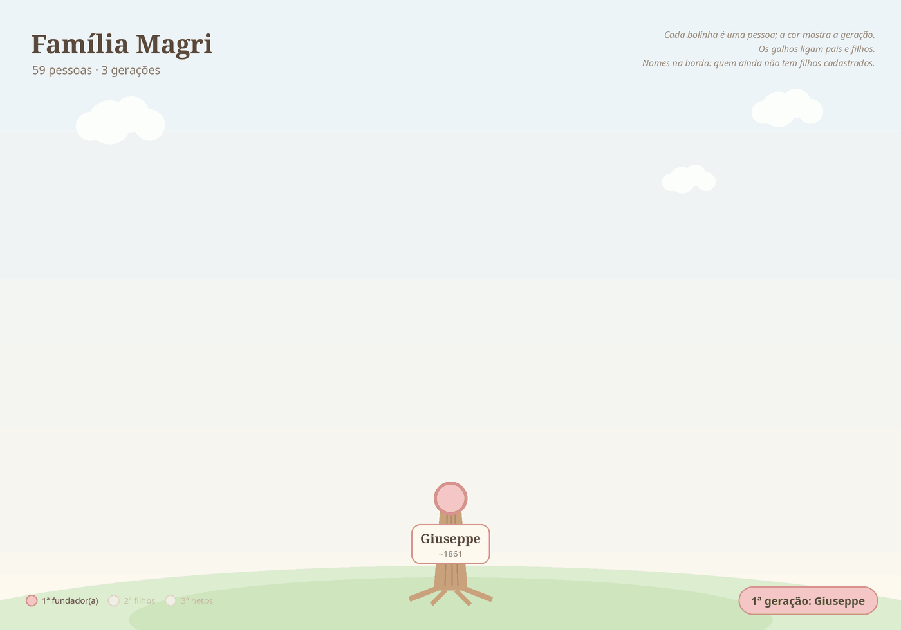

Giuseppe
Giuseppe Magri e Mansueta Polastri, de Mirandola (Modena), chegaram em 29/09/1891 no navio Adria e foram para Nova Mântua, em Alfredo Chaves (ES).
Ver na árvore interativa ✏️ Sugerir correção ➕ Acrescentar filho(a) 📷 Enviar foto ou documento
🔑 Os botões acima só funcionam com uma conta no GitHub (é gratuita e leva poucos minutos: criar conta). Sem conta? Peça a um parente que tenha conta para enviar por você.
⏳ As sugestões são revisadas antes de entrar no site, o que pode levar alguns dias. Saiba mais
A árvore em movimento

Dados
- Nascimento
- ~1861, Mirândola, Província de Módena, Itália
- Cônjuge
- Mansueta Polastri (~1860)
Família
Filhos (8)
- Carlos⚭ Adélia Bersan · 9 filhos
- Catharina ~1890⚭ Francisco ~1890 Balarini
- Francisco ~1889⚭ Hortência Laquini · 6 filhos
- Ildegarda ~1890⚭ JÚLIO SIPRIANI · 5 filhos
- Maria⚭ Hermínio Bersan · 7 filhos
- Pascoal⚭ Marcela Laquini · 8 filhos
- Rosa ~1887⚭ Luiz Fabris · 5 filhos
- Zulmira⚭ Constante Calegari · 10 filhos
Todos os descendentes (58)
Fotos

Contexto histórico
Informações sobre lugares e fatos citados acima, pesquisadas em fontes públicas na web. Não são dados pessoais desta pessoa.
Contexto histórico A grande emigração do Vêneto (1875–1914)
Entre 1876 e 1900 mais de cinco milhões de italianos deixaram o país; o Brasil esteve entre os principais destinos. No Vêneto, a principal causa foi a crise agrária provocada pela chegada de trigo barato das Américas e da Rússia, somada à pressão demográfica e à crise da pequena propriedade. Cerca de 1,4 milhão de italianos vieram ao Brasil em 50 anos, a partir de 1874.
Chegada ao Brasil Imigração italiana no Espírito Santo
A imigração italiana para o Espírito Santo começou em 17/02/1874, com a chegada do veleiro La Sofia ao porto de Vitória, trazendo 388 italianos. Entre o fim do século XIX e o início do XX chegaram ao estado cerca de 45 mil italianos, quase todos camponeses, muitos partindo de Gênova. O Arquivo Público do Estado (APEES) mantém o banco de dados "Imigrantes Espírito Santo", com dezenas de milhares de nomes, onde é possível pesquisar as listas de passageiros e pedir certidão de desembarque — útil para a cidadania italiana.
Origem na Itália Mirandola (Modena, Itália)
Comune da província de Modena, na Emília-Romanha, cerca de 31 km a nordeste de Modena. Foi por quatro séculos sede de um principado independente da família Pico — a do filósofo Giovanni Pico della Mirandola — até ser absorvida pelo Ducado de Modena em 1710. Em 2012 foi atingida por um forte terremoto.
Chegada ao Brasil Hospedaria da Ilha das Flores (RJ)
Primeira hospedaria de imigrantes construída e administrada pelo governo central, criada em 1883 numa ilha da Baía de Guanabara (perto de São Gonçalo), em parte para isolar os recém-chegados da febre amarela que assolava a capital. Foi a principal porta de entrada de quem desembarcava no porto do Rio; estima-se que 700 mil pessoas passaram por ela até seu fechamento nos anos 1960. Desde 2010 abriga um Centro de Memória da Imigração (Marinha/UERJ).
Pasta de origem: 04Magri/00Giuseppe/